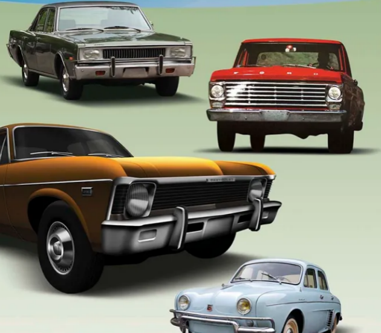
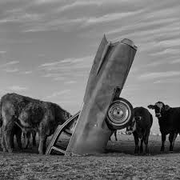

Galería



Un homenaje artístico a la cultura automotriz, en el corazón de Argentina
San Luis es un ejemplo de integración de distintos tipos de obras de arte en circuitos viales de la provincia. Poniendo obras de todo tipo y tamaño al alcance de la población Puntana. Una provincia que valora las expresiones plásticas y no duda en fomentar la integración de las mismas con el paisaje su gente y los visitantes.
Quienes imaginamos este proyecto somos amantes de los fierros, de los autos. Vemos en cada coche abandonado una historia para contar que no quiere ser olvidada, en cada auto destinado a la chartarra sabemos que hay miles de kilómetros recorridos, muchas vivencias y anécdotas que necesitan ser recordadas. Si los automóviles hablaran cuantas cosas nos contarían, de sus andanzas, sus alegrías y penas vividas junto a sus dueños. Para nosotros los autos no son solo un montón de fierros, son mucho más.
Argentina es un país de fanáticos fierreros y San Luis una provincias cuna del automovilismo con el circuito del Potrero de los funes en sus inicios de tierra, supo y sabe albergar historias del automovilsimo nacional y provincial , por eso San Luis merece y va tener una escultura dedicada a los automóviles entre las poco más de 15 reconocidas que existen hoy en el mundo.
Por eso imaginamos un lugar para rendirle culto a los grandes clásicos Argentinos, y lo haremos a través de una puesta en escena permanente de varios vehículos en desuso expuestos enterrados y / o apilados de forma creativa y divertida. La obra estará a la intemperie. Soportará las inclemencias del clima, los efectos del sol la lluvia, de cara al viento, la arena la fauna y la flora del lugar.
En un lugar remoto de la Provincia, en una zona poco poblada y transitada de difícil acceso, sobre la ruta 45, entre San Antonio y Villa General Roca ( Los Manantiales) , en una zonas agreste , con poca infraestructura, se alzará una intervención artística , un homenaje dedicado a todos los automóviles Argentinos del ayer que ayudaron al desarrollo de la provincia e hicieron historia en San Luis y en el país. Un lugar para la reflexión, la contemplación, un lugar para el agradecimiento a todos esos fierros que movieron y trasladaron cargas, mercaderías, sueños , personas, y que rodaron por las interminables fantásticas rutas puntanas una y otra vez hasta el fin de sus días haciéndonos la vida un poco más fácil. Ante todo será un emplazamiento artístico con una característica distintiva: La obra mutará constantemente, se prevee que será intervenida por artistas puntanos en una primera etapa, y luego por los visitantes con grafittis , se fomentará la intervención de los participantes.
Un lugar dedicado y pensado para los amantes de los autos, para los tuercas, los fierreros, o simplemente para quienes disfruten del arte, del silencio, de la contemplación de la naturaleza en su estado más puro y también para quienes se deleiten persiguiendo lugares exóticos, distintos , divertidos y únicos y porque no un poco “ bizarros” por lo raro y extraño de la obra disruptiva que el visitante encontrará al llegar al lugar.
El rancho será un lugar de encuentro para los miembros de clubes de automóviles, usuarios de marcas, fanáticos de los clásicos y del off road. Clubes moteros y mucho más.
Un lugar de peregrinación, un lugar para darse cita una vez al año en un evento . Una excusa para salir a rodar.
Quienes deseen podrán dejar su impornta en la web del Rancho además de ser parte de esta obra realizando una intervención ya sea grafica o material sobre ls misma.
El Rancho será un lugar de peregrinación y vendrá gente de todos los rincones del país para sacarse una foto frente a la obra. Se realizarán encuentros y campamentos en el lugar.
El Rancho será visitado asiduamente por diferentes motivos, a saber:
1. Por la pasión y el amor por los autos que va a transmitir la obra y el lugar.
2. Por las instalaciones disponibles para realizar un picnic o un asado y disfrutar de un dia de sol o una tarde de primavera.
3. Por la excusa para salir a rodar con tu auto clásico.
4. Porque los autos de nuestras vidas se merecen un lugar y un homenaje.
5. Por ser algo único y distinto.
El Rancho buscará posicionarse como un atractivo en una zona que carece de propuestas turísticas, cercano a la Sierra de las Quijadas, ofreciendo una experiencia única, diferente e inolvidable para el visitante.
A través de una instalación única y sin precedentes lograremos que el visitante recuerde los autos de su infancia, las maquinas que trasladaron a sus padres y abuelos, los autos que acompañaron a sus familias haciendo posible la vida y los adelantos en los distintos lugares de la provincia y del país.
Innovación, diferenciación, pasión, creatividad y responsabilidad social.
El Rancho no poseen fines de lucro.
El Rancho es una expresión artística para ser disfrutada por todos.
Las empresas que deseen sponsorear el proyecto podrán hacerlo con pintura, trabajo de puesta en escena, cartelería y colocando sus logos.
Artistas Puntanos serán invitados a intervenir los automóviles.
Las asociaciones y clubes de automóviles podrán visitar el lugar sin cargo.
Los turistas podrán visitar el lugar y será gratuito.
Cada año abrimos una convocatoria para que artistas, estudiantes y colectivos de arte puedan intervenir nuevos autos. Escribinos a contacto@autoartesanluis.ar o completá el formulario.